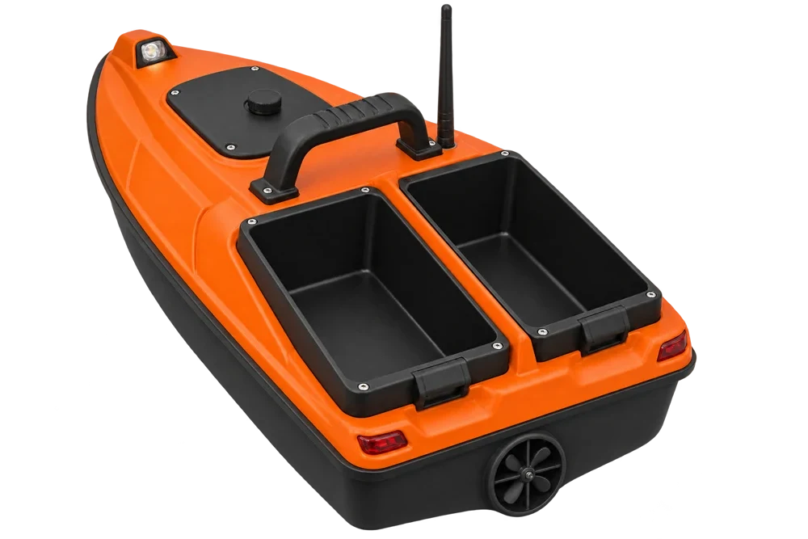

Управляйте
Бункеры, центральный сброс, разбрасыватель и освещение. Ручное управление, круиз-контроль и несколько видов камеры.
Выберите место, загрузите прикормку и отправьте кораблик к своей точке. Изучайте водоём и попробуйте разные виды ловли.
Версия 0.25-testТестовая сборка
Android 8.0+ · Браузер с WebGL2 · Бесплатная тестовая версия
Сначала посмотреть инструкцию ↓
От первого маршрута
до первого трофея.
Бункеры, центральный сброс, разбрасыватель и освещение. Ручное управление, круиз-контроль и несколько видов камеры.
GPS-точки, задания по маршруту, карта глубин и эхолот с рыбными значками и звуковым обнаружением.
Карповая снасть, троллинг, маховая удочка, толстолобик и морской режим с пеленгасом.
Онлайн и соревнования — в разработке. Подключение к другим игрокам пока недоступно.
Синхронная запись экрана: нажатия и движения стиков совпадают с голосом. Красная рамка показывает нужный элемент, а сбросы показаны крупным планом. Женская нейросетевая озвучка, субтитры и 18 глав.
Сборка прошла автоматические проверки. Работа на вашем устройстве может отличаться.
Стабильные версии предназначены для обычной игры. Тестовые содержат новые возможности, которые ещё проходят проверку.
Загружаем список версий…
Начиная с 0.23 приложение проверяет GitHub при запуске и предлагает «Обновить» или «Позже». После загрузки Android попросит подтвердить установку. Если у вас 0.22 или старее, один раз установите новую сборку поверх прежней.